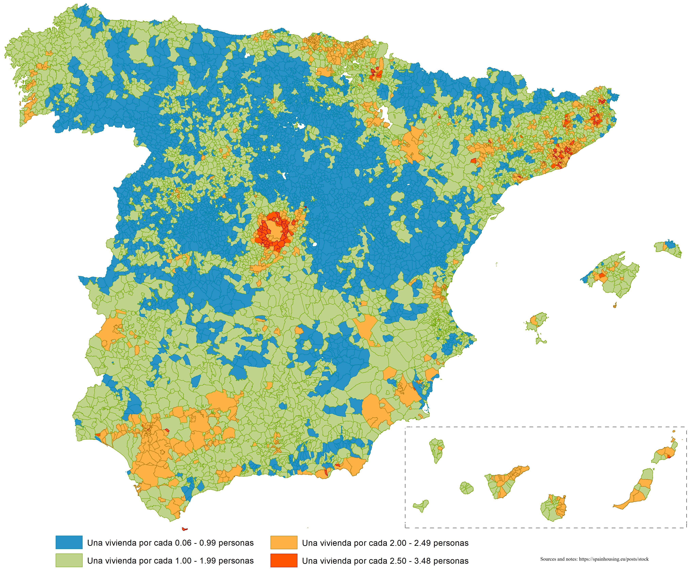

Creative Commons Attribution-ShareAlike 4.0 International License.
Creative Commons Attribution-ShareAlike 4.0 International License.
Medir la escasez de vivienda no es una tarea sencilla, ya que intervienen múltiples factores. El indicador más intuitivo, sin embargo, es el número de viviendas por persona. Aunque esto refleje principalmente la presencia de familias, esos futuros hijos pronto necesitarán una vivienda en las cercanías, lo que ejercerá una presión adicional sobre el mercado inmobiliario.
| Color | Título | Número de habitantes por vivienda |
|---|---|---|
| 🟦 | Sin escasez | Hay una vivienda por cada 0,06 - 0,99 personas |
| 🟩 | Baja escasez | Hay una vivienda por cada 1,00 - 1,99 personas |
| 🟨 | Moderada escasez | Hay una vivienda por cada 2,00 - 2,49 personas |
| 🟥 | Alta escasez | Hay una vivienda por cada 2,50 - 3,48 personas |